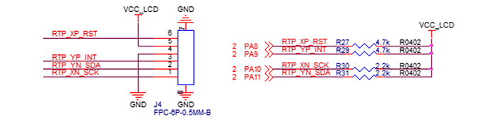

CTP 调试配置
CTP 驱动一般由触摸屏原厂提供，经过移植后添加到 SDK 中编译和使用。本节以 GT9xx 触摸屏为例，详细说明调试和移植一款新 CTP 的流程。
从触摸屏供应商处获取和内核版本匹配的驱动程序，如果版本不匹配则可能编译出错，需要自行适配。
驱动移植
-
修改 Makefile 文件，将 gt9xx 目录中的源文件编译进内核模块。
在 source/linux-5.10/drivers/input/touchscreen/Makefile 文件中添加以下内容：
diff --git a/drivers/input/touchscreen/Makefile b/drivers/input/touchscreen/Makefile index 75924acd8..4be057598 100644 --- a/drivers/input/touchscreen/Makefile +++ b/drivers/input/touchscreen/Makefile @@ -116,3 +116,6 @@ obj-$(CONFIG_TOUCHSCREEN_ROHM_BU21023) += rohm_bu21023.o obj-$(CONFIG_TOUCHSCREEN_RASPBERRYPI_FW) += raspberrypi-ts.o obj-$(CONFIG_TOUCHSCREEN_IQS5XX) += iqs5xx.o obj-$(CONFIG_TOUCHSCREEN_ZINITIX) += zinitix.o +obj-$(CONFIG_INPUT_TOUCHSCREEN) += gt9xx/确保 gt9xx 目录中包含正确的驱动程序源代码，并且该目录结构符合内核的构建系统要求。
- 修改 Kconfig 文件，引入
gt9xx目录下的Kconfig文件。在 source/linux-5.10/drivers/input/touchscreen/Kconfig 中添加以下内容，使得该目录下的配置选项能够被主Kconfig文件识别和处理：diff --git a/drivers/input/touchscreen/Kconfig b/drivers/input/touchscreen/Kconfig index a8d18a679..6acdc3b63 100644 --- a/drivers/input/touchscreen/Kconfig +++ b/drivers/input/touchscreen/Kconfig @@ -1344,5 +1344,7 @@ config TOUCHSCREEN_ZINITIX To compile this driver as a module, choose M here: the module will be called zinitix. - +source "drivers/input/touchscreen/gt9xx/Kconfig"确保
gt9xx目录中包含一个有效的Kconfig文件，并且该文件定义了与gt9xx驱动程序相关的配置选项。
内核配置
- 在 Luban 根目录下执行 make km (make
kernel-menuconfig)，进入 kernel
的功能配置，按如下选择：
Linux Device Drivers Input device support [*] Touchscreens <M> gt9xx based touchscreens确保
gt9xx based touchscreens被选中（用<M>表示）。 -
保存配置并退出配置界面后，以 ko 的方式编译驱动。
-
编译完成后启动系统，启动脚本 S10mdev 自动加载，如下：
start(){echo-n"Starting $DAEMON... "start-stop-daemon-S-b-m-p$PIDFILE-x/sbin/mdev---df[$?-eq0]&&echo"OK"||echo"ERROR"# coldplug modulesfind/sys/-namemodalias-print0| \ xargs-0sort-u| \ tr'\n''\0'| \ xargs-0modprobe-abq} -
如果不需要自动加载，可注释掉所示代码，并按照需要自定义加载服务，否则可略过此步。
自定义时，可参考其他启动服务。
DTS 参数配置
- GT9xx 驱动程序中所要解析的 dts
参数：
static int gtp_parse_dt(struct device *dev, struct goodix_ts_platform_data *pdata) { int ret; u32 key_nums; struct property *prop; u32 key_map[MAX_KEY_NUMS]; struct device_node *np = dev->of_node; gtp_parse_dt_coords(dev, pdata); ret = of_property_read_u32(np, "irq-flags", &pdata->irq_flags); if (ret) { dev_info(dev, "Failed get int-trigger-type from dts,set default\n"); pdata->irq_flags = GTP_DEFAULT_INT_TRIGGER; } of_property_read_u32(np, "goodix,int-sync", &pdata->int_sync); if (pdata->int_sync) dev_info(dev, "int-sync enabled\n"); of_property_read_u32(np, "goodix,driver-send-cfg", &pdata->driver_send_cfg); if (pdata->driver_send_cfg) dev_info(dev, "driver-send-cfg enabled\n"); of_property_read_u32(np, "goodix,swap-x2y", &pdata->swap_x2y); if (pdata->swap_x2y) dev_info(dev, "swap-x2y enabled\n"); of_property_read_u32(np, "goodix,slide-wakeup", &pdata->slide_wakeup); if (pdata->slide_wakeup) dev_info(dev, "slide-wakeup enabled\n"); of_property_read_u32(np, "goodix,auto-update", &pdata->auto_update); if (pdata->auto_update) dev_info(dev, "auto-update enabled\n"); of_property_read_u32(np, "goodix,auto-update-cfg", &pdata->auto_update_cfg); if (pdata->auto_update_cfg) dev_info(dev, "auto-update-cfg enabled\n"); of_property_read_u32(np, "goodix,esd-protect", &pdata->esd_protect); if (pdata->esd_protect) dev_info(dev, "esd-protect enabled\n"); of_property_read_u32(np, "goodix,type-a-report", &pdata->type_a_report); if (pdata->type_a_report) dev_info(dev, "type-a-report enabled\n"); of_property_read_u32(np, "goodix,resume-in-workqueue", &pdata->resume_in_workqueue); if (pdata->resume_in_workqueue) dev_info(dev, "resume-in-workqueue enabled\n"); of_property_read_u32(np, "goodix,power-off-sleep", &pdata->power_off_sleep); if (pdata->power_off_sleep) dev_info(dev, "power-off-sleep enabled\n"); of_property_read_u32(np, "goodix,pen-suppress-finger", &pdata->pen_suppress_finger); if (pdata->pen_suppress_finger) dev_info(dev, "pen-suppress-finger enabled\n"); prop = of_find_property(np, "touchscreen-key-map", NULL); if (prop) { key_nums = prop->length / sizeof(key_map[0]); key_nums = key_nums > MAX_KEY_NUMS ? MAX_KEY_NUMS : key_nums; dev_dbg(dev, "key nums %d\n", key_nums); ret = of_property_read_u32_array(np, "touchscreen-key-map", key_map, key_nums); if (ret) { dev_err(dev, "Unable to read key codes\n"); pdata->key_nums = 0; memset(pdata->key_map, 0, MAX_KEY_NUMS * sizeof(pdata->key_map[0])); } pdata->key_nums = key_nums; memcpy(pdata->key_map, key_map, key_nums * sizeof(pdata->key_map[0])); dev_info(dev, "key-map is [%x %x %x %x]\n", pdata->key_map[0], pdata->key_map[1], pdata->key_map[2], pdata->key_map[3]); } pdata->irq_gpio = of_get_named_gpio(np, "irq-gpios", 0); if (!gpio_is_valid(pdata->irq_gpio)) dev_err(dev, "No valid irq gpio"); pdata->rst_gpio = of_get_named_gpio(np, "reset-gpios", 0); if (!gpio_is_valid(pdata->rst_gpio)) dev_err(dev, "No valid rst gpio"); return 0; } -
在 board.dts 中需要对应添加的参数项：
&i2c3 { pinctrl-names = "default"; pinctrl-0 = <&i2c3_pins_a>; status = "okay"; gt9xx@5d { status = "okay"; compatible = "goodix,gt9xx"; reg = <0x5d>; //CTP 设备地址，可以从规格书中获取 reset-gpios = <&gpio_a 8 GPIO_ACTIVE_LOW>; irq-gpios = <&gpio_a 9 GPIO_ACTIVE_HIGH>; irq-flags = <2>; touchscreen-max-id = <11>; touchscreen-size-x = <1024>; //CTP x 轴的范围 touchscreen-size-y = <600>; //CTP y 轴的范围 touchscreen-max-w = <1024>; //MAX width touchscreen-max-p = <512>; //MAX pressure goodix,int-sync = <1>; }; };CTP 设备地址获取在下列规格书示例中， GT9xx 根据初始化时序的不同支持两种设备地址，默认时序的读写地址为 0xBA/0xBB，和去掉最后一位读写位的读写地址，即设备地址，此处为 0x5d。
硬件接线示例图
注：确保 dts 所配置的参数和引脚与硬件原理图一致。
调试
-
测量硬件通路是否正常，测量电压信号是否正常。
-
查看打印信息
在 board.dts 中修改
bootargs，增加“loglevel=8”以调高打印级别，系统启动时或 insmod 驱动模块时看是否有异常打印。 -
获取坐标信息
如果系统有编译
getevent工具，可在触摸屏有触摸时进行坐标的打印：# getevent -
获取设备信息
使用以下命令查看设备信息：cat /proc/bus/input/devices输出示例如下：I: Bus=0018Vendor=dead Product=beef Version=28bb N: Name="goodix-ts" P: Phys=input/ts S: Sysfs=/devices/virtual/input/input0 U: Uniq= H: Handlers=event0 B: PROP=2 B: EV=b B: KEY=1c00 00000 B: ABS=6e1800000000000